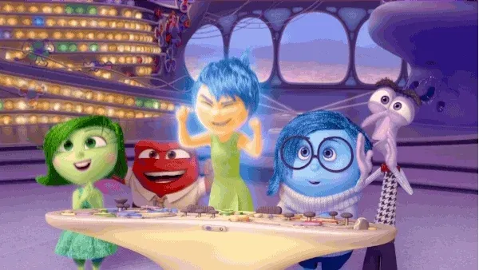

nside Out has been applauded by critics, adored by audiences, and has become the likely front-runner for the Academy Award for Best Animated Feature.
But perhaps its greatest achievement has been this: It has moved viewers young and old to take a look inside their own minds. As you likely know by now, much of the film takes place in the head of an 11-year-old girl named Riley, with five emotions—Joy, Sadness, Anger, Fear, and Disgust—embodied by characters who help Riley navigate her world. The film has some deep things to say about the nature of our emotions—which is no coincidence, as the GGSC’s founding faculty director, Dacher Keltner, served as a consultant on the film, helping to make sure that, despite some obvious creative liberties, the film’s fundamental messages about emotion are consistent with scientific research.

Those messages are smartly embedded within Inside Out‘s inventive storytelling and mind-blowing animation; they enrich the film without weighing it down. But they are conveyed strongly enough to provide a foundation for discussion among kids and adults alike. Some of the most memorable scenes in the film double as teachable moments for the classroom or dinner table.
For every person who says joy is an underlying truth that good or bad circumstances cant dictate, and that happiness is rooted in circumstance, there will be others who think the opposite, that joy is just a state of mind, the outcome of a mind seeking happiness and focused on pleasure, pleasing thoughts and pleasant experiences. Despite the different perspectives, the idea that holds greater sway today is that experiencing happiness depends on external factors. Happiness happens to us. Even though we may seek it, desire it, pursue it, etc., feeling happiness is not a choice we make. Joy, on the other hand, is a choice purposefully made.
The true definition of joy goes beyond the limited explanation presented in a dictionary — “a feeling a great pleasure and happiness.” True joy is a limitless, life-defining, transformative reservoir waiting to be tapped into. It requires the utmos surrender and, like love, is a choice to be made. Joy is not simply a feeling that happens.
how to live happyJoy is back and ready to tackle teenagerhood the joyous highs, the tearful lows, the blistering frustrations, nauseating changes and frighteningly awkward moments that Rileys new teenage world has to offer. With Rileys happiness as her first priority, Joy is determined to protect Rileys Sense of Self and help her stay the same happy kid she knows and loves. ptimistic, lighthearted and bubbling with bright ideas for their girls future, nothing will derail Joys plan for Headquarters - that is, until new emotions move in